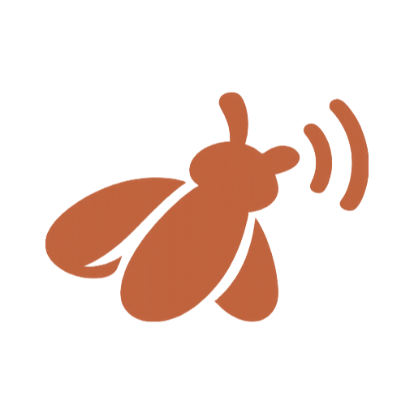

Flywall — Building a Billion-Dollar App
Ship the beta this week
Charge for the memory tier
Flywall captures more than meetings — the calls you take, the documents you read, the research and articles you consume — and files it all into a private memory that's yours alone. It works like a second brain: it categorizes and stores everything you learn, then a local AI hands it back the moment you need it to push your ideas forward. It all runs on your machine: nothing is uploaded, no account required.
Available for macOS, Windows & Linux · Free while in beta
Memory tier at $20/mo. Privacy is the pitch. Revisit after the beta lands…
SAM revised to 2.4M knowledge workers across NA + EU target segments…
Lock the launch plan · cut the beta build · draft the memory-tier page.
First 50 founders to DM when the beta ships.
Flywall takes in everything you learn — meetings, notes, documents, research — files it into a private memory, and lets you question all of it. Without a byte leaving your machine.
Audio is captured and transcribed on your device in real time, with speaker labels. The moment you stop, your second self writes the summary, decisions, and action items — so you stay present instead of scribbling notes.
Meetings, notes, documents, links, the research you consume — everything you bring in becomes a movable card on a private board. Your second self files and categorizes it all into columns — drag, tag, filter — then export anything to plain Markdown. No nested folders to dig through.
Memory tier at $20/mo; privacy is the pitch.
Local memory is the moat · ship the beta.
Everything you capture — meetings, documents, the research you consume — is chunked, embedded, and categorized on your machine into a private knowledge base. Ask a question and a local AI answers from your material — not the internet — citing exactly where it came from. The more you feed it, the sharper your second self gets, and the faster you move your ideas forward.
No bot joins your call. No audio is uploaded. No account required. The AI runs on your CPU.
A second you that answers to no one else.

YOUR MACHINE processing locallyIt remembers every investor call and strategy session, so you can recall any promise or number on the spot — without a tool that leaks your roadmap.
Every discovery call, spec, and research doc becomes searchable memory — ask what a user said three sprints ago and get the exact quote, linked to its source.
A second you for each client — every engagement's meetings stay separate, instantly recallable, and never touch a shared cloud.
Walk in briefed by your second self, walk out with the follow-ups already captured — and recall any past decision instantly.
Connect Google Calendar for prep briefs before, and follow-ups after.
A floating Sparkles bubble for quick AI actions, right on your board.
Export everything to .md with YAML frontmatter.
A warm light mode and deep-plum dark, fully themeable.